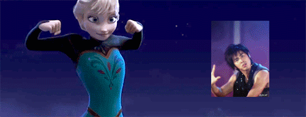
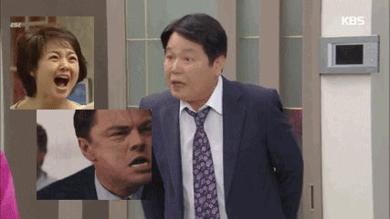

방학은 정말 좋은 것
>치바대 워크숍 영차영차 덮밥 인정
일본 치바대에 일주일간 워크숍을 다녀왔다. (약간의 관광과ㅎㅎ) 일주일동안 처음 만난 사람들과 꾸준히 회의를 해서 결과물을 만드는 경험은 처음이었다. 할 수 있는 역할을 찾으려 용썼던 기억에 식은땀이 다 나는구나! 하하. 내가 몰라 그렇겠지만 처음보는 프로그램도 더러 있었고 디자인 슨배들과 함께라 좋은 배움이 된 듯. 외국인과 오래 대화해본 것도 처음이었다. 다 그냥 사람들이었다. 짧은영어지만 어떻게든 전달하려고 용을 쓰니 이야기가 가능했다. 겁을 덜어낸 것 같다. 가장 중요한 것은 회덮밥이랑 장어덮밥이 겁나 맛있었다는 것이다. 잊지모태...

왔다리갔다리에 장단 맞춰주는건 아무나 하는게 아니다
언니의 왔다리갔다리에 정신적으로 이리저리 끌려다니며 초스트레스를 경험했다. 개강하고 싶어졌었다. 나 괴롭히지 말어라. 엉엉엉

삼겹살 굽다 싸울 수도 있다
속초아이들과 고성에 펜션을 빌려 하루 놀았다. 고성 펜션은 우리동네에서 차로 삼십분도 안 걸리는 것 같다. 우리는 멀리로는 여행을 못가는 병이있다ㅎ. 삼겹살을 밖에서 구워먹었는데 바람이 좀 많이 불었다. 다들 고기에 자신만만했지만 막상 잘 굽는 놈은 하나도 없었다. 서로 고기 못굽는 취급하자 심히 자존심을 상해했다. 우리는 모두 고기박사이고 싶었다. 불길이 솟으니 다들 흥분해서 소리를 질러댔다. 우리는 웃으며 나가자고 서로를 다독였다. 잠시 아슬아슬했다^^ 나는 개인적으로 사람이 6명인데 고기를 3만원어치 사오고 파채나 잔뜩 사온 아이들에게 화가 조금 났다^^. 아무래도 내가 제일 고기 박사인 것 같다. (혜빈이 최고)
